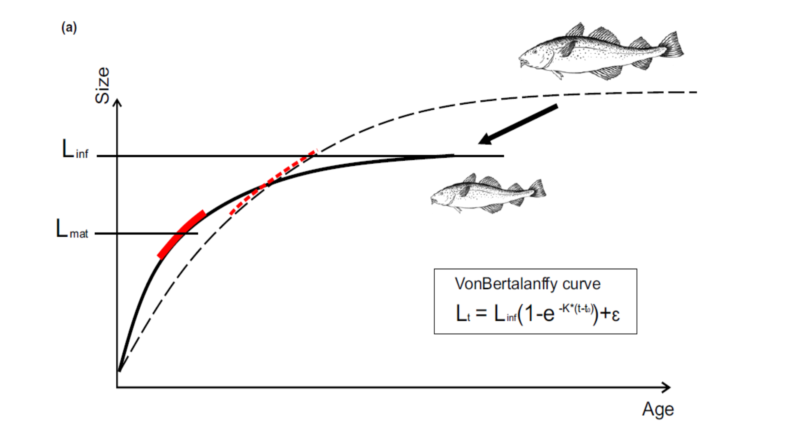
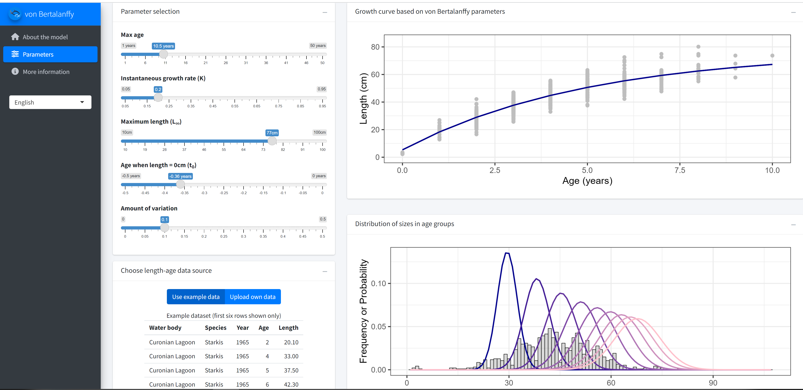
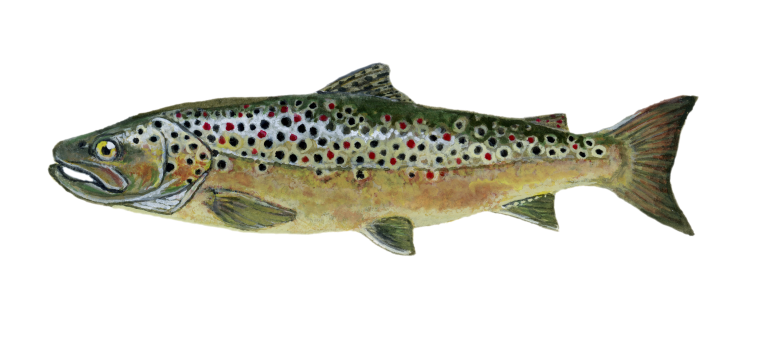

Models to explore and estiamte von-Bertalanffy growth curves
Introduction
One of the most common ways to model fish growth is by using the von Bertalanffy growth curve. The most common version of von Bertalanffy curve describes the length of a fish as a function of three parameters; the asymptotic length \(L_\infty\), the von Bertalanffy growth coefficient \(k\) and the theoretical age \(t0\) at which fish size is 0.
\(L_{(t)} = L_\infty (1-e^{-k(t-t0)})\)
The \(k\) parameter is the instantaneous annual growth rate and it shows how quickly an individual will approach its asymptotic length. In many species \(1/k\) gives an approximate age at maturation, although this can vary.
In some studies you might also see a two parameter von Bertalanffy curve, which does not include parameter \(t0\), but is described as
\(L_{(t)} = L_\infty (1-e^{-kt})\)
While the two parameter function is commonly used and might be easy to understand, it has been criticised, for example here

Model code
We have developed an R shiny application that allows you to explore length growth curves under different von Bertalanffy parameter values. You can use our example age-length data to see how the curve fits the realistic data set (it is already loaded in the app). Or alternatively you can upload your own age-length data, but make sure you keep the same format as our example.
Importantly, you can explore the histograms of lengths at age, assuming different coefficients of variation (CV) of age-length variability. For example, some populations may have little growth variation, which means that CV is small (CV = 0.1 or smaller), and different age groups are clearly differentiated in their lengths. Other populations might have a lot growth variability (CV = 0.3 or larger), which means that there will be a lot of length overlap among age groups and it will be difficult to separate age classes from length data alone.
To start using the model, go here

Application of the model
The von Bertalanffy (VB) growth function is very widely used in fisheries and ecology. You will need the VB growth parameters for most fisheries models and they are also used in the ecosystem models, like this size based ecosystem model for the Curonian lagoon. However, this function should be treated with some caution. To estimate the growth function coefficients reliably we need sufficient amounts of data from young and old individuals. Both might be limited in our data. For example, if a fish stock is heavily fished, we may never see large individuals and will not be able to estimate their asymptotic size. Also, if our data comes from fisheries, rather than independent surveys, we may never see small individuals. If we do not have old fish in the sample the asymptotic length \(L_\infty\) cannot be properly estimated. As a result, estimates of \(k\) will also vary extensively across samples.
FishBase is the largest and most important fish database in the world. In this database you can search for VB growth parameter for your fish species, reported in different studies (scroll all the way down and click on the selection Growth, as in this example for pike). You can see how much these estimates will vary across populations. Part of this variation is due to natural growth differences across populations, but a large fraction is also variation due to uncertain estimates from limited data. For this reason we have developed the application below, so that you can carefully explore how different VB parameter fit your datasets.
